49 Org Mode en Mapas Mentales
Org Mode en mapas mentales, lo puedes descargar en PDF. Puede ser útil para tener una visión de conjunto.
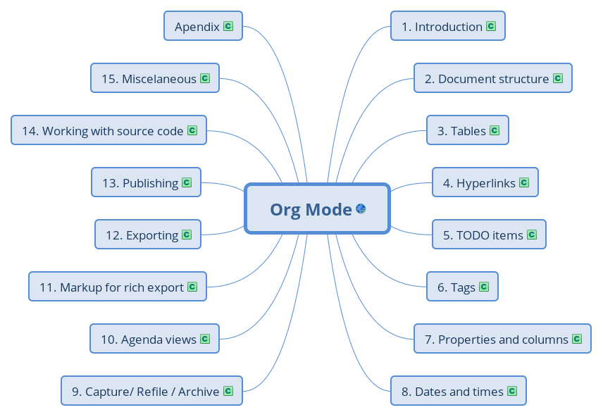
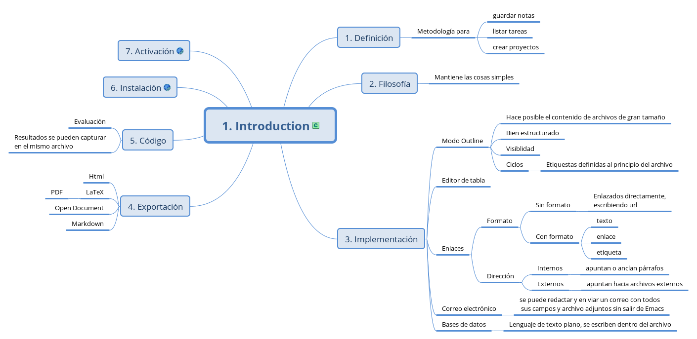
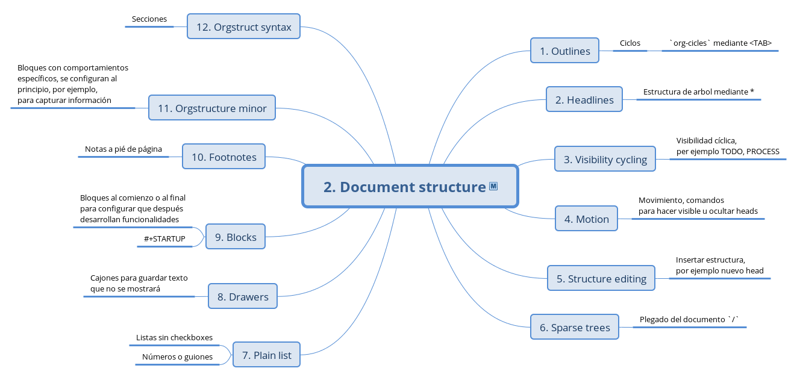

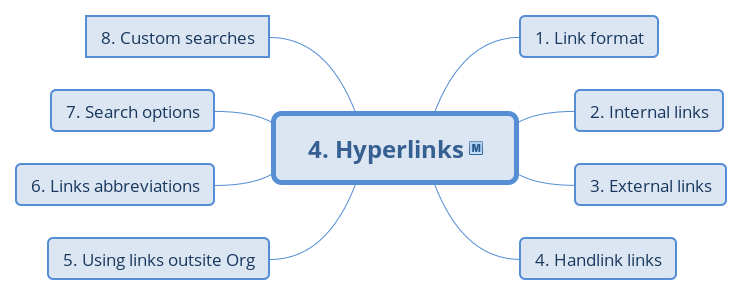
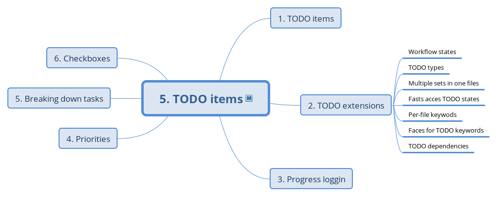
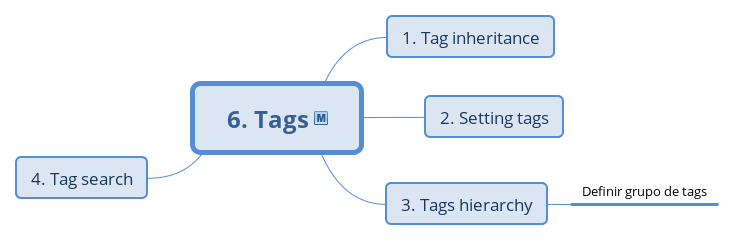
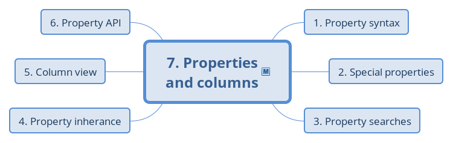
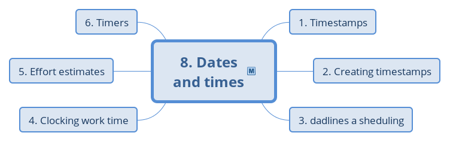
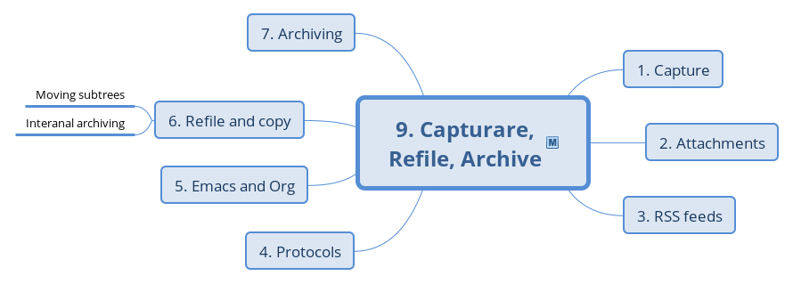
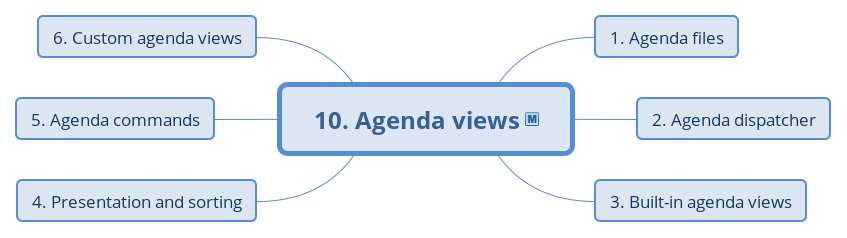
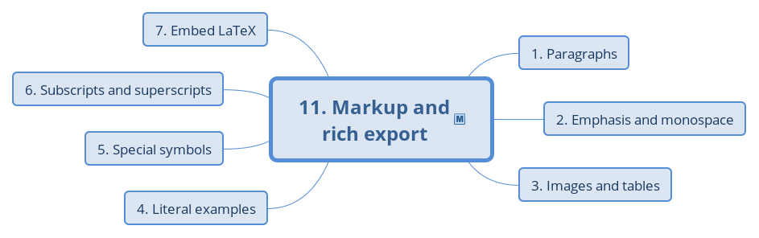
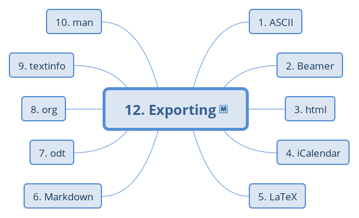
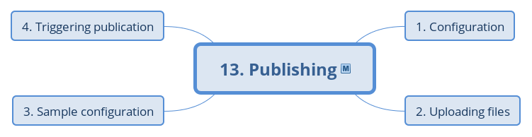
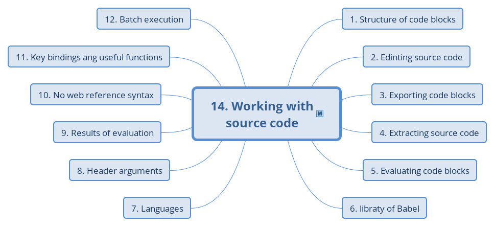
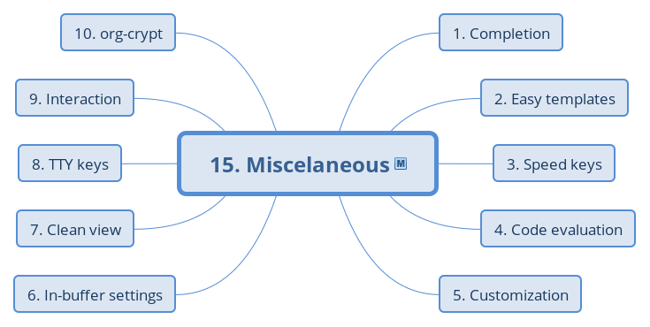
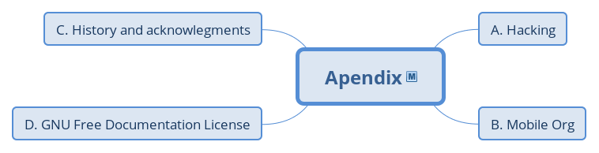
Org Mode en mapas mentales, lo puedes descargar en PDF. Puede ser útil para tener una visión de conjunto.
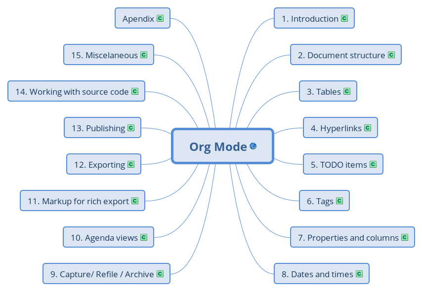
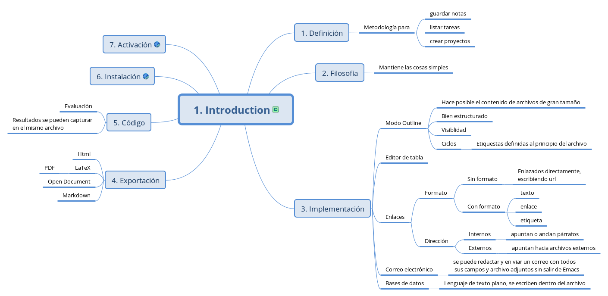
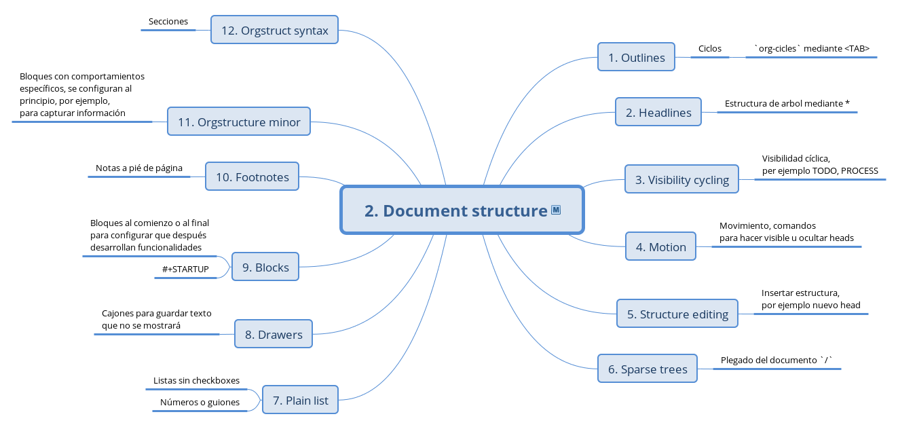
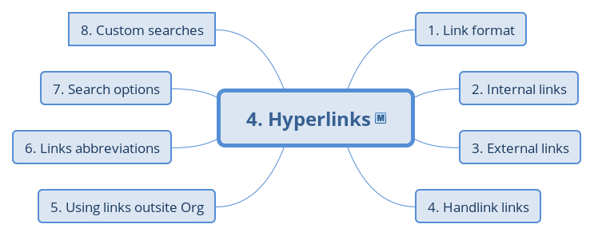
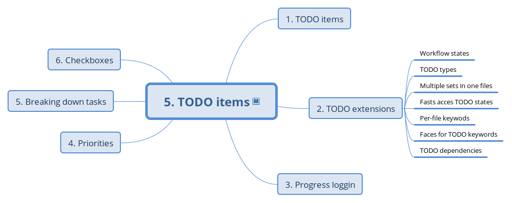
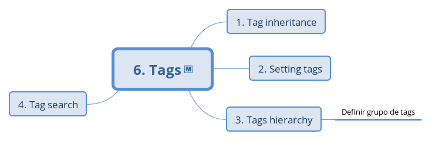
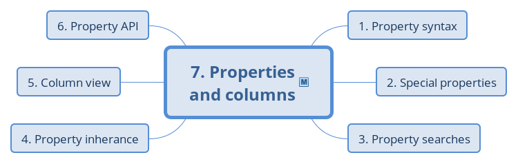
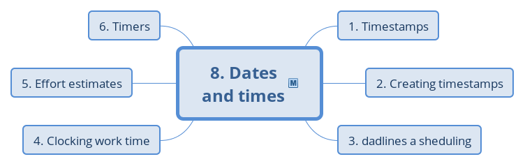
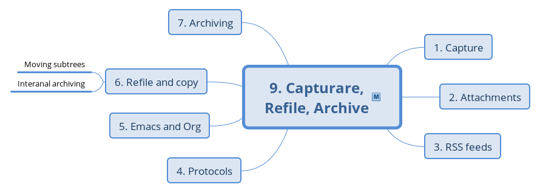
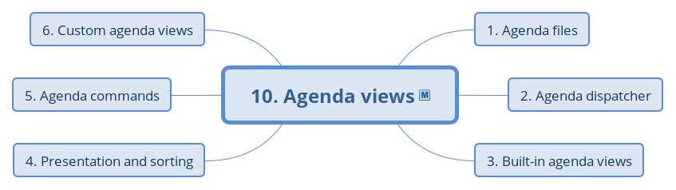
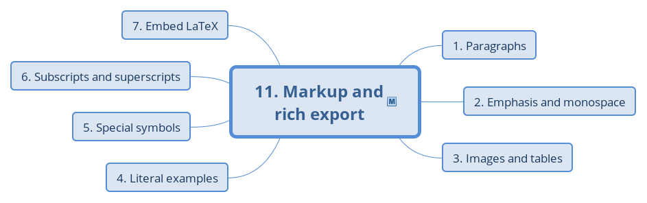
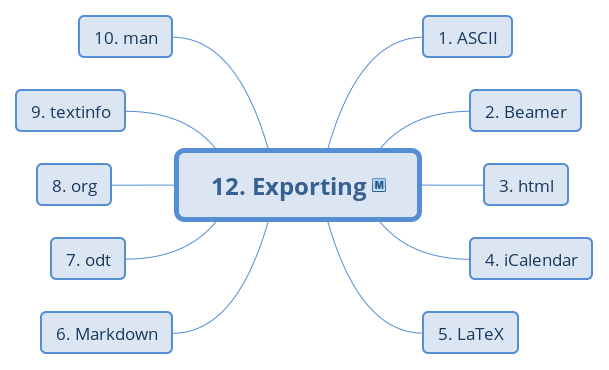
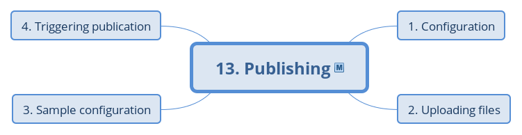
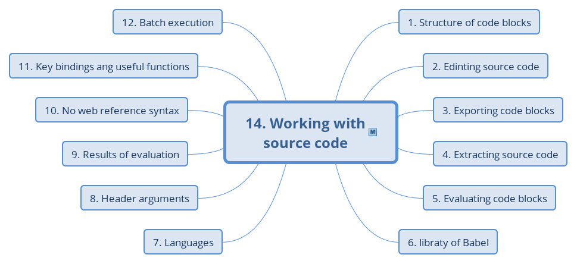
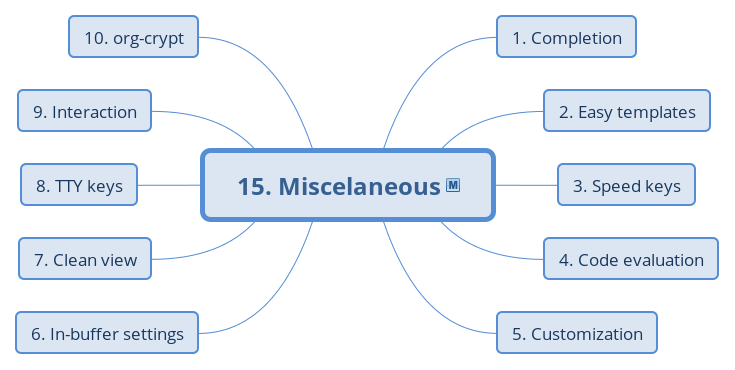
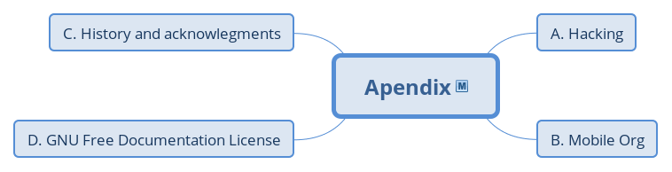